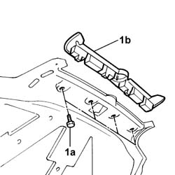
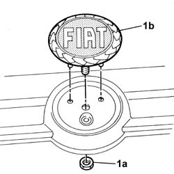
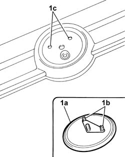
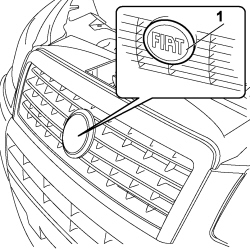
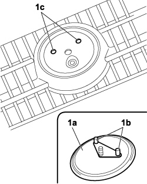

7055A50 frieze, hinge cover or code (one) - r+r
- Path
- Procedures > 70 FITTINGS > 7055 MOULDING AND PROTECTION > 7055A exterior mouldings > 7055A50 frieze, hinge cover or code (one) - r+r
- Kind
- repair procedure (removal / refitting; the operation number is the code)
- Applies to
- all engines; all production periods
- Interactive page
- https://sloeber94.github.io/elrnDB-fDbl/en/#/2585215
Applies to: engines: 1.2 8v, 1.6 16v, 1.3 JTD 16V, 1.9 JTD 8V, 1.9 DIESEL; all production periods
 Removing
Removing
 Refitting
RefittingOpen the bonnet.
1. Undo the bolts (1a) and remove the grille (1b).

Applies to: engines: 1.2 8v, 1.6 16v, 1.3 JTD 16V, 1.9 JTD 8V, 1.9 DIESEL; all production periods
1. Undo the nut (1a) and remove the trim (1b).

Applies to: engines: 1.2 8v, 1.6 16v, 1.3 JTD 16V, 1.9 JTD 8V, 1.9 DIESEL; all production periods
Refitting
Removing1. Fit the trim (1a), fitting the pins (1b) in the openings (1c) in the grille.

Applies to: engines: 1.2 8v, 1.6 16v, 1.3 JTD 16V, 1.9 JTD 8V, 1.9 DIESEL; all production periods
Tighten the trim fixing nut.
Fit the grille and tighten the bolts.
Applies to: engines: 1.4 8v, 1.6 16v, 1.3 JTD 16V, 1.9 JTD 8V; production: da 12/03; only with equipment: MY 2005
Removing
RefittingTurn the ignition key to the OFF position.
Lift the bonnet
Op. 7055B08 GRILLE (ONE) ON FRONT BUMPER - R.R
1. Undo the fixing nut and remove the badge from the grille.

Applies to: engines: 1.4 8v, 1.6 16v, 1.3 JTD 16V, 1.9 JTD 8V; production: da 12/03; only with equipment: MY 2005
Refitting
RemovingCheck that the badge is not damaged.
1. Fit the badge (1a) fitting the pins (1b) in the openings (1c) in the grille.

Applies to: engines: 1.4 8v, 1.6 16v, 1.3 JTD 16V, 1.9 JTD 8V; production: da 12/03; only with equipment: MY 2005
Tighten the badge fixing nut.